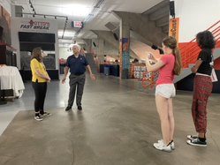
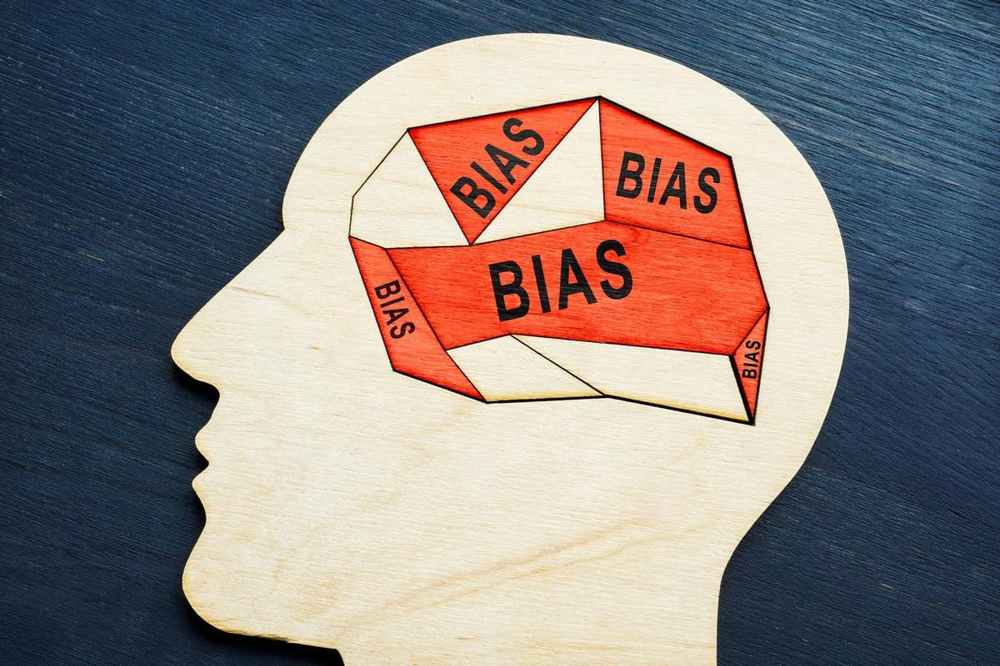

Mary Louise Prather was an American spy, and one of the few women in the cryptography
field during the Cold War era and WWII. She joined the SIS in 1938, and worked many
different jobs in the office, slowly moving up in the office. Finally, in 1940, she reached
the position of Chief of the Stenographic section, making her in charge of filing
intercepted messages. She worked with the messages that were intercepted and worked
very secretly to ensure the safety of the country. Mary also helped distribute the
decoded messages to the correct people. Her most significant accomplishment was identifying
a correlation between two different Japanese messages, and using this knowledge to decrypt
more Japanese encoded messages.
The Hunt!
Kate Craig / July 20th, 2022
Today we were senton a scavenger hunt. My favorite spot we visited was the dome.
When we were conducting our interview, we learned all about the new technologies
that were actively being added into the dome. We then got a tour of the inside of
the stadium, and we learned about the new wifi being implemented, the screens, audio,
and more. Syracuse is one of the few univerities able to hold the largest sporting events becasue of these technolgoies.
One art that i found very interesting was looking down in the stadium, and seeing the cars parked in the field.
This showed me how large the dome actually was, and gave me an object to scale with.
The whole department uses technology by micro-managing the whole campus, tracking who swipes
in and out, and managing hundreds of employees.

My Favorite HTML Tutorial
Kate Craig / July 21th, 2022
This video is a tutorial on how t add gifs into your HTML website.
I love this video becasue I think adding things that catch a viewers eyes wil make your website pop.
Citizen Science: What I do to Contribute
Kate Craig / July 21th, 2022
When I was in 7th grade, my science teacher had us use this app called iNauralist.
Where any person from the public could post photos of any creature, or plant, and provide a description.
Then, real scientists and people who are experts in certain fields could go to your posts and help you
identify what you had taken photos of. Along with the images and description, you were required to put the
location you found the plant or animal. This data was and is being used in many ways and the data is all
collected by the general public then sent to experts. I participated in this for about a year and a half, and it was really
exiting to know that by taking a photo of a plant, I was contributing to data that experts were using.
Phishing & Cybersecurity
Kate Craig / July 22th, 2022
Cybersecurity is the security of all of your data online. There are many different cyber threats, the one I find interesting being phishing.
Phishing is where the hacker sends you something or makes you click on a link or do an action that comprimises your information, generally copying or imitating someone or something.
The future is cybersecurity. With the rapid advancements in technology and in cybersecurity specifically, there is no chance that
it's not our future. We need to keep advancing because threats that we havent seen before or expect will be thrown at us and we need to be prepared.
Hopefully, as we prepare for larger and new cyber attcks, we will find solutions to the cyber attacks we see regularly. The future is technology,
and I think it is imparative that we start to introuce technology and cybersecurity into the younger generations for this reason.
Bias or Bust
Kate Craig / July 25th, 2022
In todays lesson we talked about bias. We went over the different types of biases, then played a game. The game was like a debate, where we tried to convince them to do or not do something.
We had to create an argument for or against something, but then we had to bus the other groups arguments. Points were added and deducted based on how good they thought the
arguments were. You have to take into account so many things to revive the points. Their biases, their opinions, and their age and what they think. It is not what YOU believe,
but what THEY believe, making this activity much more diffucult. This activity made me realize how easily people are influnced based on thier biases and opinions.

Are Charts Compelling?
Kate Craig / July 26th, 2022
I found the map pictured below to be very interesting because it makes sense to me. I was lucky enough to go on a trip to europe this summer and the coffee intake was visibly greater than in the US.
In the United States, coffee is regularly comsumed in the morning, and in the morning only, but in most/all European countries, people drink it for breakfast, but also after lunch or dinner. After
each dinner in Europe we were asked if we wanted any coffee or tea, and most people ordered something. This explains why the overall intake of coffee is higher in European countries vs in the Amercias.
Charts are more compelling when one can relate to them. For me, this specific chart was relatable because I had just been in one of the highlighted areas. If a chart is aimed to please the masses,
it will be much more compelling. A great chart also uses strong colors to help highlight certain things, and weaker colors to not highlight other areas. This makes the chart much easier to read,
and more compelling overall.